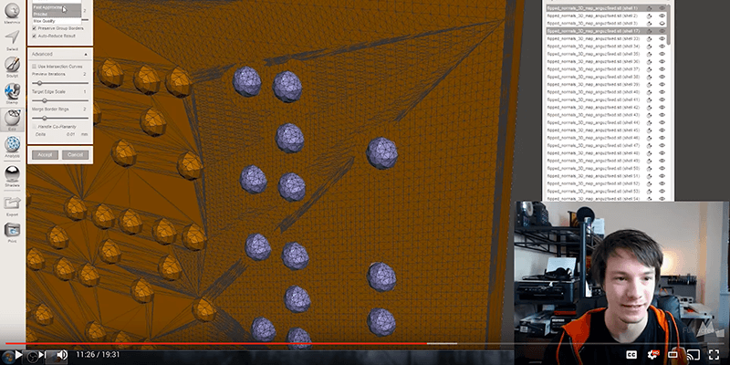
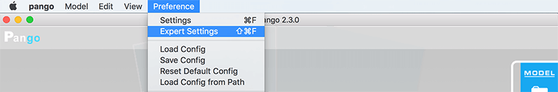
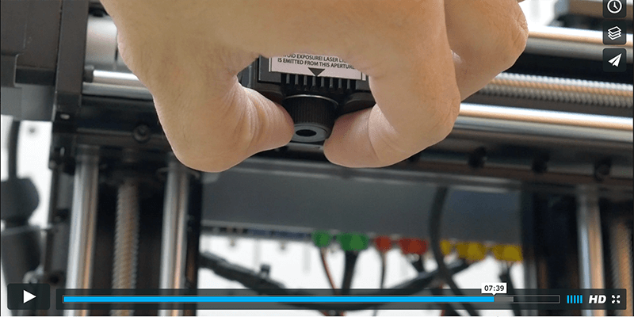

There are plenty of active users in the Trinus community right now, so don’t be afraid to ask as many questions as possible. This document will try and get you started, but there’s always unknowns that will crop up and the following options will help you get through those.
I highly suggest you watch all these videos just to get your bearings before you start your build process.
Getting Started: https://vimeo.com/album/4289066
Printer Assembly: https://vimeo.com/164016762
Terrible quality and terribly useful
https://www.youtube.com/channel/UCMnqd6BRofGVrfA0u4806YQ
NOTE
The Printer Assembly video was created using a Prototype unit during the Kickstarter Campaign; before the production units were realized, so there will be some differences. Even with that said, I still feel it’s a great video to watch before assembling your printer (No Assembly Instructions? Check the Downloads section).
WARNING
Make sure when attaching the Extruder Assembly / Laser Mount, that you don't over tighten the screws. This can mess with the threading of the mount point but also cause your screws to get stuck to the point of having to using a Drill / Dremel to cut the screw head for removal. To help with this process, hold the included wrench so that you are holding the shorter section, to reduce the amount of torque you can apply.
Some good general information, plus some great ideas in the comments.
http://www.kodamaforums.com/phpBB3/viewtopic.php?f=21&t=7
https://www.facebook.com/groups/Trinus3D
Here’s a forum section dedicated to helping people with solutions that work. Great place to start when you run into issues.
http://www.kodamaforums.com/phpBB3/viewforum.php?f=22
Please ensure you installed the small black spacer under the bed first. See how it’s installed in the official video:
https://vimeo.com/album/4289066/video/195241496
You will also need to install the BuildTak material on top of the Heated Bed. You can’t print directly on the surface of this bed, since it’s too slick anything to stick. Plus there is a good chance of ruining your brand new heated bed if you tried.
Tip: Installation Tweak (Forum Thread)
You want to make sure you install a zip tie around the cable connection and through the holes at the back left of the heated build plate. This is to help reduce any fatigue caused by the constant motion.
Idea provided by Roi Igarashi @ Kodama
WARNING
The downside to having a secured cable (above image), is that the zip ties rounded bump will crash into the small fan shroud at the bottom of the Extruder Assembly. So you will need to stay away from this little corner when slicing models. If you come up with a better working solution to keep the cable secure, please leave feedback on Facebook or the Forums.
Tip: Secure cable to the Z-Axis
it’s also a good idea to secure the end of the pigtail loop to the Z-axis slider.
Idea and image provided by Rick Miller
Tip: Part Removal
One of the community members (sorry, can’t remember who told me about it) had posted about how they like to heat up the build plate to about 60C to help with the removal of the printed models.
Using one of the recommend removal tools you should slowly work your way under an edge of the printed object, then move the tool around the entire underside of the model until it’s fully released. This will help ensure your BuildTak material lasts a good long time.
WARNING
Please DO NOT try and rip the model from the BuildTak, this is how you destroy the surface and it ends up being very expensive to keep replacing them. This also ensures you don’t prematurely destroy your heated bed in the process.
Tip: Cleaning
Heat build plate to 100C to soften any residue that might have been left behind after removing your printed models, so it will be easy to clean up with your removal tool of choice.
Here’s a video showing how to clean the BuildTak material with 70% Alcohol as well: https://www.youtube.com/watch?v=BrJc2cqYeXI
This is installed on its own, don’t use the small black spacer from the Heated Bed.
OMG where is my Spool Holder? Well, this is meant to be one of your first functional prints. You have the option to grab the official spool holders or one of the community created options. While printing these, you can simply stand your spool up behind the printer, then check on it during printing to ensure it doesn’t get tangled up on anything.
Official Spool Holders (see Downloads section)  Normal Spool Holder (left) and Enclosure Spool Holder (right)
Normal Spool Holder (left) and Enclosure Spool Holder (right)
Community Created Spool Holders
http://www.thingiverse.com/search?q=trinus+spool+holder 
Get the latest version (2.3+) as it will be needed to get you set up.
Facebook Group - Files Section
https://www.facebook.com/groups/Trinus3D/files/
Forum Post - Facebook File Sync
Since as of this writing the Forum Downloads section doesn’t have the same files as the Facebook Group (this may change when things settle down on Kodama’s side), but for now these files have been downloaded and tossed into a DropBox share; latest additions will be posted here:
http://www.kodamaforums.com/phpBB3/viewtopic.php?f=21&t=363
Windows
You can run Pango from any directory. Just open the “pango.exe” file.
Mac
Move Pango application from your Downloads folder to your Application folder. This is due to the security restrictions that OSX applies to the Downloads folder.
It’s very important to get your USB connection setup now, else you may go mad trying to get your printer running at peak performance.
Mac USB Connection
http://www.kodamaforums.com/phpBB3/viewtopic.php?f=8&t=370
Windows USB Connection
http://www.kodamaforums.com/phpBB3/viewtopic.php?f=22&t=304
Test USB Connection
If for some reason you can’t complete these steps, please post details about your system in the forum threads above, so that the community members can help you out.


Tip: Mac just won’t connect for me (advanced option)
If you happen to have a copy of Windows 7+ lying around, then you can install a copy of windows into a “virtual machine” using free software like VirtualBox (https://www.virtualbox.org).
The Trinus contains with the basics when it comes to tools you may need. But here are a few other items that will make your life easier when starting out.
If you EVER plan on changing your Nozzle (getting different sizes or extra 0.4 nozzles) you will want these to hold the nozzle when it’s hot. Plus these are great for grabbing the support material / rafts and ripping them away from your model.
I find these are great to have around for cutting a 45deg angle in the filament before trying to load some up, cutting bad sections of filament off, and even making a clean cut at the end of zip ties
Recommendation
Flush Cutters - US / UK (love these things)
This will help a TON when trying to remove the prints from the build plate. Things have a tendency to stick pretty darn good to the BuildTak material provided. You can even get some thin metal Paint Scrapers from your local hardware store.
Recommendations
Hobby Spatulas - US / UK
Japanese Spatula - US / UK
This will come in handy whenever you need to break down your Extruder Assembly. Due to the fact the assembly contains 1.5mm grub screws.
Recommendation
45 Piece Screwdriver Set - US / UK
If your computer doesn’t already have one, get one, all you’ll do is drive yourself CRAZY if you don’t have one of these. 90% of all 3D printers use SD Cards, so if you ever plan on expanding your printer collection, get one… just GET ONE.
Tip: You might have one
Most Laptops have these built-in as well, so please check if you already have one.
Get a variety pack of these screws and nuts, especially if you’re in the US, since it can be a PAIN to find the right length that you need. Also get some M3 x 25mm and M3 x 30mm screws, the 25mm length ones are what’s currently used for the Axis Offset Screws, but if you wanna play around with using a Glass Bed, you will need longer screws (hence the 30mm ones).
Now that we have all the Pre-Check steps complete, we can start the process of getting your nozzle set up so that you have a successful first print.
WARNING
Please make sure the nozzle is cool (Cyan LED on Control Board) before performing this process. That way you don’t accidentally melt your non-heated bed (image below), the BuildTak material, or damage your Heated Bed.
Image provided by Claus Olesen


Some of the SD Cards that came with the Trinus were blank. But you can get all the files that were meant to be included on the card online, see the Download section above, as these files are stored alongside Pango.
Before loading up your SD card with any files, it’s recommended to reformat it using FAT32 file system. Users have experienced random stops when using bad SD cards, which seem to be corrupting the files stored on them; formatting the card can help prevent this. If you’re not sure how to format an SD card, google is your friend: Windows | Mac
Tip: What do all those beeps and LED colors mean?
Here’s a forum post describing what the various colors and sounds mean: http://www.kodamaforums.com/phpBB3/viewtopic.php?f=22&t=1440
Tip: Formatting didn’t help
You might have a bad SD Card. If you have another SD Card available that is 32GB or smaller, try that one and see if that fixes your printing problem.
I think for this one, it’s better explained in a video format. So here’s a detailed video on loading filament into the Trinus. A quick tip version is also available on the same YouTube channel, if you just want the 1min quick and dirty walkthrough.
Breakdown: Trinus - Loading Filament
https://youtu.be/oYl3rGYUAbo 
Tip: Filament Guide (advanced upgrade, not required)
Here’s a filament guide widget that will help you with loading filament, of course you need to at least load it once without this guide, so that you can print the model. The creator of this model recommends using PETG filament; so your mileage may vary using less heat resistive materials such as PLA. If you're completely new to 3D Printing this might be a daunting mod, since you need to dismantle your Extruder Assembly in order to install this. http://www.thingiverse.com/thing:2041586
From the Download section, we’ll start by grabbing the Pokemon Autoprint test file.

 Image provided by Samuel Irons
Image provided by Samuel Irons

If you have the LCD add-on, then you can name the file anything you want when you place it on the SD Card. Simply choose the file from the LCD UI and it will start the printing process.


Tip: No Folders or Special Characters
Right now the LCD screen won’t let you navigate through folders on the SD Card, so you will need to store all your pcde/gcode files, that you want to print, on the root of the card. Users have also noticed that the file names can only contain AlphaNumeric, Spaces, and Dashes in their names, otherwise it can cause the LCD to just send you back to the main menu without starting the print.
If you don’t want to use the “autoprint.pcode” naming convention, for automatic prints, you can simple name the files whatever you want, then print them via the Pango Console.


I would definitely recommend these troubleshooting guides that Simplify 3D and the folks in the Ultimaker Community put together, lots of great information on solving common print issues.
Simplify 3D Troubleshooting Guide
https://www.simplify3d.com/support/print-quality-troubleshooting/
Ultimaker Troubleshooting Guide
http://support.3dverkstan.se/article/23-a-visual-ultimaker-troubleshooting-guide
It’s a good practice to make sure the your STL files, which came from your design programs or online repositories, are free of any issues. There is a good chance you can get away with a bad model in your slicer, but that varies depending on the slicer and what sort of auto-fixing features it has build in. This is the sort of thing that is best seen in action, so I found this great video from Angus at Maker’s Muse, using a free application called MeshMixer:
Fixing impossible STL's with Meshmixer
https://www.youtube.com/watch?v=8ECNP3WN_-Q 
Here’s a few basic settings to help you have a successful first print. These options will either be in Settings or the Expert Settings area. You can find both of these sections listed in the Preferences menu: 

WARNING
If this is turned on and you don’t have a heated build plate, the printer will just wait forever until the non-existent build plate heats up (eject sd card to stop).

For the actual printing process, it’s the same thing that has been outlined above in the First Print section.
Tip: Free 3D Models
There are plenty of online repositories with free 3D models you can print. One of the most popular sites is Thingiverse.com, but here’s a list of other options to find what you’re looking for: Best Sites for Free STL Files & 3D Printer Files/Models
Tip: Autoprint Name Options
If you are using Pango to slice your models and currently don’t have the LCD add-on, you’ll need to name your file “autoprint.pcode” and store that file at the root of the SD Card. If you plan on using some other slicer, then you will need to name the file “autoprint.gcode”. Since only Pango creates “pcode” files and just about all the other slicers will give you the standard “gcode” file type.
Tip: Try, Fail, Learn
Try new things and fail often, as you’ll learn so much during this process. 3D Printing at home is still in its infancy, so be prepared to fail as you get to know your printer (no matter the make / model). If you can’t figure out how to solve a problem yourself with the guides listed in the Troubleshooting Print Issues, then please post in the official Facebook Group and/or Forums.
Safety First:
Your Laser Engraver should have come with some Green Safety Glasses, please wear these the ENTIRE time you are around the laser while it’s on. The last thing you want to do is lose an eye because you thought, “It’ll never happen to me.”
Official Video: Laser Installation and Usage
Here’s a little video on how to install the laser assembly and the basics of getting it set up.
https://vimeo.com/album/4289066/video/196594883
Check Firmware
There was an update to the firmware that fixes an issue with the laser staying on after click on the stop / pause button. So you will want to ensure you have the latest firmware (v3.5.6+) installed before using the Laser Engraver (see Update Firmware section).
Do you have all the parts?
Just a quick confirmation that you have the 3 items needed to start your laser engraving adventure; Laser, Laser Mount, and Safety Glasses. If for some reason you didn’t get a Mount, you can print a copy of it, the file is available in the Downloads section, OR you can print the fixed one referenced in the Maximize Laser Build Area section. 


Tip: Why Disconnect the Extruder?
While testing the Laser Engraver a community member had left the extruder connected and he quickly discovered that there is a bug in the current firmware that turns on the Heater for the Extruder while engraving.
This may be fixed in the future, but I would consider it a “Best Practice” to completely remove the attachments that you aren’t currently using.


In order to start using Pango to slice your images for engraving, you will first need to tell Pango that you’ve installed this tool head.

For focusing your laser, you should watch how this is done in the official video.
WARNING
Some materials will give off toxic fumes, as one user discovered when engraving Chromed Leather. So if you plan on venturing out beyond your standard Wood blocks, I’d suggest doing some google searches on that specific material to ensure it’s safe to burn.
Trinus - Laser Installation and Usage
https://vimeo.com/196594883#t=389s 
Now that you are all focused up, time to start finding things around the house to engrave (see WARNING above about choosing materials).
Tip: 10 Tips and Tricks
Stumbled across this Instructable on various tips and tricks when working with laser engravers. Some good information if you are completely new to laser engraving. http://www.instructables.com/id/10-Tips-and-Tricks-for-Laser-Engraving-and-Cutting/
If you want to ensure your Trinus is up to date with the latest firmware, which may fix known issues, then here’s a quick look on how to do this process. You can get the latest version of the firmware from the Downloads section.


NOTE
If for some reason it fails the first time, try again. If you can’t get it updated you may need to email support@kodama3d.com to help you track down the root cause of your issue.
Here’s the process to get the maximum use of the build volume, by getting your nozzles “Home” position to be exactly at the front left corner of your build plate.
The following little helper tool will let you easily hand tighten / loosen the offset screw locking nuts. BUT you will first need to use a wrench to loosen them initially, since they were tighten quite a bit during assembly. There are 2 versions of this helper, one of them has a section cut out (right image) that lets you slide the tool over the screw shaft for usage.
Trinus - Axis Adjustment Helper
http://www.thingiverse.com/thing:2041158 
Now let’s begin the meticulous process of adjusting the offset screws to maximize the build volume.
WARNING
Just like when you had went through the process to Set Nozzle Distance, you will want to do this with a cold nozzle.


WARNING
Before trying to move any axis to its max position you need to Home that axis. The Trinus doesn’t know the position of the axis until it’s been homed. So when you change the offset screws, it no longer knows it’s “correct” position, so you need to Home the axis to reset what the “0” position is.
Tip: Z-Offset Via 3rd Party Slicer (advanced user)
If you prefer to use a 3rd Party Slicer for “everything”, then there is a way to set / get the current Z-Offset value via the Terminal window in your prefered slicer. The Terminal window is just a way to send individual Gcode commands to the printer. Here are the 2 commands, first one to get the current value and the second will set the value (positive = closer to bed, negative = further away):
M628 ; Get Current Z-Offset Value M628 Z0.08 ; Set Current Z-Offset Value to 0.08mm
Paul Drinkut helped troubleshoot (Facebook Post) the reason why the Laser Engraver wasn’t using the full build area, this was due to the fact the Laser Mount didn’t have the same left offset that the Extruder Assembly had.
So in order to fix this, a modification was made to the official 3D Model (original model can be found in the Downloads section) to add in a small left offset of 5mm. This combined with the X/Y-Axis offset screws allowed for the maximum engraving area to be achieved.
If you haven’t already, you will need to follow the process to Maximizing Build Volume in 3D Printing first, then you can print the fixed Laser Mount (below) to maximize your laser engraving area.
Modified Laser Mount
https://www.dropbox.com/s/...2020170125.stl?dl=0 
Tip: Find center using a cross hair image
Paul Drinkut had come up with a great idea of manually measuring out the center point of a piece of material (same size as the build plate), then use the laser to engrave a cross hair image to check if you have the laser centered. You can use a straightedge to extend the cross hair lines to the edge so that you can measure the results. (Facebook Post)
Image by Paul Drinkut and Photoshopped Ruler added by John Sanford
Here’s a quick guide to get OctoPrint up and running, which was very straight forward. I used a Raspberry Pi 3 and OctoPi to get OctoPrint up and running quickly.


NOTE
If you find you still have questions regarding the finer details for setting this up, please check out Thomas Sanladerer’s video on the subject.
Getting started with OctoPrint on the Raspberry Pi 1, 2 and 3! [2016 edition]
A slicer is what you use to turn a 3D model (STL file) into a Gcode file, this is what defines how the 3D Printer moves, amount of material to push out, speed, temperature, etc. If you're curious what all those Gcode values do, there’s an online wiki that describes them all.
For the Settings, please read the provided Forum Threads as they have helpful tips and solutions that people have come up with for that respective slicer. Plus those threads are also a great place to ask questions and share your own modifications.
https://www.simplify3d.com/
Considered to be the best of the best when it comes to slicers. But it also comes with a steep price tag of $150. So if you are planning on making money from 3D Printing, it might be worth the investment.
Forum Thread:
http://www.kodamaforums.com/phpBB3/viewtopic.php?f=20&t=5
Tip: Configuration Assistant
In the Help menu is a Configuration Assistant that will allow you get the most recent profile for the Trinus 3D Printer, it’s currently listed as “Kodama Trinus”. Currently (as of the writing of this guide) there is a bug in this profile that prevents you from printing via SD Card. A user in the forums had posted a very simple fix for this: http://www.kodamaforums.com/phpBB3/viewtopic.php?p=1741#p1741
https://ultimaker.com/en/products/cura-software
This is an excellent free option with a ton of features, and is a great starting point if you want to venture out into the world of 3rd Party Slicers.
Forum Thread:
http://www.kodamaforums.com/phpBB3/viewtopic.php?f=20&t=1423
NOTE
Currently it doesn’t seem possible to use Cura to connect to your printer over USB in Windows / Mac; users have had success with Linux though. So if you need a way to print via USB then I’d suggest one of the Other Slicers such as Repetier (https://www.repetier.com/) or even OctoPrint for printing over WiFi.
Here’s a quick list of other slicers, but I haven’t seen anyone mention settings to be used with them. Will update this document with Forum links if I come across them, or someone recommends them. You can try using the same settings from Cura / S3D as a starting point for these as well.
Slic3r - http://slic3r.org/
Repetier - https://www.repetier.com/
CraftWare - https://craftunique.com/craftware
There are plenty of other options for slicing, but these are the most popular ones that I’m aware of. If you feel another should be added to the list, and you have some settings for it, please add a comment in the forums.
This is where you can find out how to make your printer last a long time and ensure it’s running smoothly.
Here’s a video from Marius Hirn on how to take apart the Axis sliders, clean, grease, and put it all back together again. This will also be helpful if you need to remove backlash (back and forth) movement on the sliders (by tightening the spring a bit more).
TRINUS 3d printer slider disassembling and greasing
https://www.youtube.com/watch?v=7NlR7_E2QIo 
Grease Recommendations
Liqui Moly Mos2 Long-life Grease - US / UK
Super Lube - US / UK
Here’s a method known as Cold Pulling, where you heat up the nozzle just enough to get the filament soft, then reduce the temp so it’s a bit more firm, and pull it out. You can repeat this process until the nozzle is clean.
Tip: Using Nylon
Some people love to use Nylon filament for this process as it does a great job of holding on to the gunk that might be stuck in the nozzle. If you plan on doing this, you will want to heat the nozzle to 230C, then reduce to 100C for the pull.
Find all the changes that have been made since you last downloaded a copy of this guide. All dates are listed in Year / Month / Day format.
2017 / 02 / XX v1.2
2017 / 02 / 04 - V1.1
2017 / 01 / 31 - V1.0 (Initial Release)